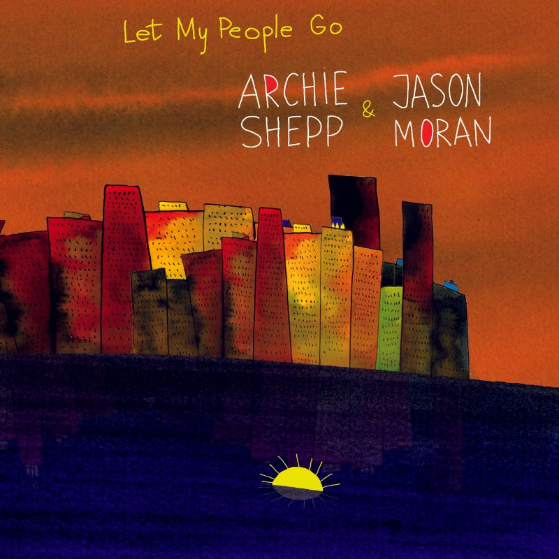

Archie Shepp & Jason Moran: Let My People Go (Archieball)
The words of Exodus suffuse the entirety of Archie Shepp and Jason Moran's new album of duo performances, from the title to every note the two play. But listening to it, I couldn't help but think of another passage of scripture that resonates with the soul-rattling, cavernous echo of Shepp's saxophone: “I am the voice of one crying in the wilderness: Make straight the path of the Lord.” As John the Baptist spoke those words in gentle yet emphatic direction to the Judeans then, Shepp's horn screams to us today how we have failed to straighten that path.
